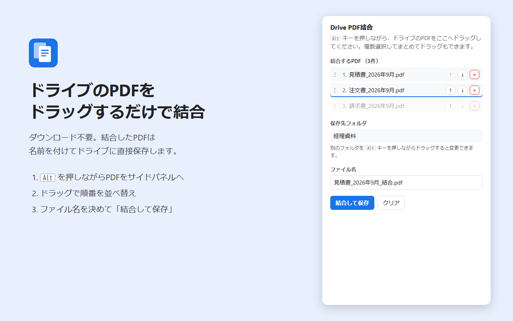

Drive PDF結合
GoogleドライブのPDFを、ダウンロードせずにブラウザ上で結合するChrome拡張機能です。結合したPDFは名前を付けてドライブに直接保存します。

使い方
- Googleドライブを開き、ツールバーの「Drive PDF結合」のアイコンをクリックしてサイドパネルを開きます
- ドライブで Alt キーを押しながら、PDFをサイドパネルへドラッグします（複数選択してまとめてドラッグもできます）
- 行をドラッグするか、↑↓ボタンで結合する順番を並べ替えます
- ファイル名を確認して「結合して保存」を押すと、1件目のPDFと同じフォルダに保存されます
保存先を変えたいときは、保存したいフォルダを Alt キーを押しながらサイドパネルへドラッグしてください。
特長
- PCへのダウンロード・アップロードが不要
- 共有ドライブのPDFにも対応
- 元のPDFは変更しません
プライバシー
PDFの読み込みと結合はすべて利用者のブラウザ内で行い、外部のサーバーには送信しません。詳しくはプライバシーポリシーをご覧ください。
お問い合わせ
kazuki@noto-lab.com